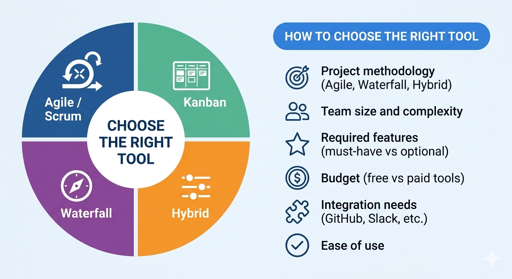

Familiarize yourself with the tools used in the software industry.
Project management software helps teams plan, organize, track, and manage their work. Different tools support different needs — from simple task tracking to complex project planning and resource management.
| Tool | Best For | Key Features |
|---|---|---|
| Jira | Agile/Scrum teams | Backlog, sprint planning, reporting, integrations |
| Trello | Simple workflows | Kanban boards, cards, drag-and-drop |
| Microsoft Project | Waterfall projects | Gantt charts, scheduling, resource management |
| Asana | Task management | Timeline, collaboration, task tracking |
| ClickUp | All-in-one solution | Multiple views, docs, goals, integrations |
Jira is widely used for Agile and Scrum projects. It supports backlog management, sprint planning, and detailed reporting such as burndown charts. It integrates with tools like GitHub and is suitable for software development teams.
Trello is a simple, visual tool based on Kanban boards. It uses cards and lists to organize tasks and is easy to use. It is suitable for small teams and simple projects.
Microsoft Project is used for traditional (Waterfall) project management. It provides advanced scheduling tools such as Gantt charts, resource management, and critical path analysis.
Asana is a flexible tool that supports task tracking, collaboration, and multiple views (list, board, timeline). It is suitable for teams needing both simplicity and structure.
ClickUp is an all-in-one project management platform. It offers multiple views, documentation, goal tracking, and strong customization options.
Jira, ClickUp, Trello
Trello, Jira, Asana
Microsoft Project
ClickUp, Asana

When selecting a tool, we should consider:
Agile, Waterfall, or Hybrid?
Small team or large enterprise?
Must-have vs optional?
Free vs paid tools?
GitHub, Slack, etc.?
Will the team use it?